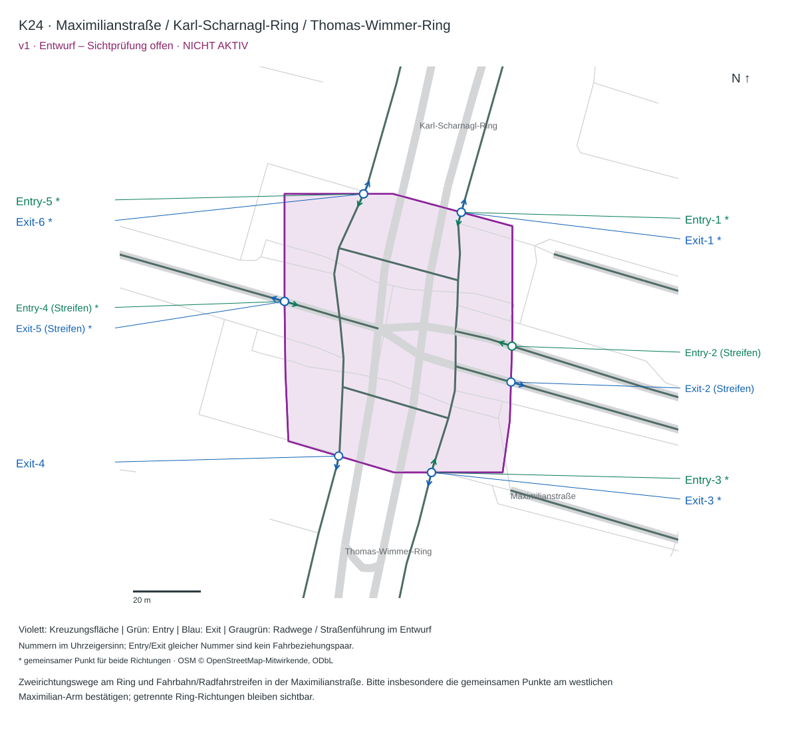

K24 v1 · Maximilianstraße / Karl-Scharnagl-Ring / Thomas-Wimmer-Ring
Korrigierter Entwurf · nicht deployedEntwurf: 15/15 Links-/Geradeausbeziehungen offline bestanden; Sichtfreigabe und Aktivierung offen
Zweirichtungswege am Ring und Fahrbahn/Radfahrstreifen in der Maximilianstraße. Bitte insbesondere die gemeinsamen Punkte am westlichen Maximilian-Arm bestätigen; getrennte Ring-Richtungen bleiben sichtbar.
